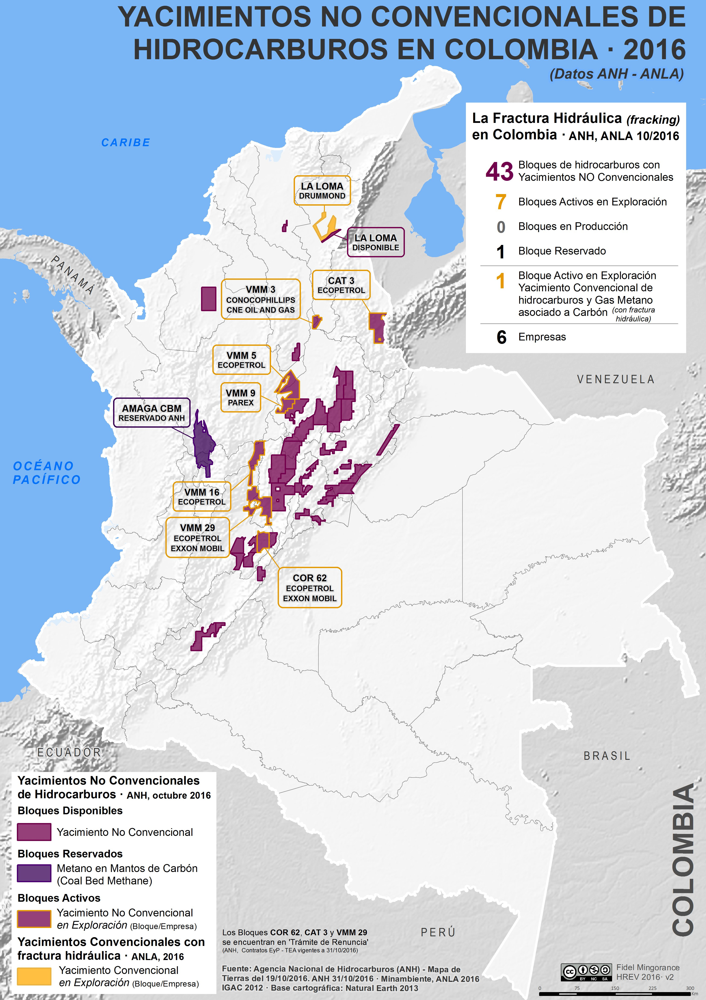

Análisis científico · Serie fracking en Colombia
43 bloques de hidrocarburos no convencionales. Millones de litros de agua. El Nido Sísmico de Bucaramanga y fallas geológicas superficiales. Ecosistemas únicos en el planeta. Y un vacío legal que ningún gobierno ha podido llenar.
"Un mapa de bloques petroleros no es solo economía. Es geografía humana, hidrología y sismología al mismo tiempo."
Trabajo en el Permian Basin como parte del Texas Produced Water Consortium (TxPWC) — el consorcio creado por ley estatal de Texas para evaluar qué hacer con el agua producida del fracking. Mi especialidad es modelar cómo viajan el uranio, el radio y los PFAS en agua subterránea. El Permian Basin no es un modelo para Colombia — es mi laboratorio. Pero la cadena de consecuencias es real: la ciencia desarrollada aquí informa la regulación de Texas; esa regulación ha servido históricamente como referencia técnica para Colombia y otros países latinoamericanos. Cuando esa cadena cambia — como está ocurriendo con los recortes masivos a la EPA desde 2025 — las consecuencias no se quedan en Texas.
Además, como tercer autor en Huggins, Gleeson, Serrano et al. — Nature Sustainability (2023, University of Victoria) sobre cuencas subterráneas y áreas protegidas, puedo decir con base científica que el mapa de bloques que se discute en Colombia subestima sistemáticamente el alcance real de los riesgos hídricos — porque las cuencas subterráneas no coinciden con las superficiales.
Sin agua no hay fracking. Y en el Permian Basin de Texas, fracturar un solo pozo requiere entre 75 y 114 millones de litros (entre 20 y 30 millones de galones). El consumo diario del Permian equivale al de toda la ciudad de Dallas.
En Colombia las proyecciones son similares: entre 9 y 29 millones de litros por pozo. Si se desarrolla el potencial estimado del Magdalena Medio, la industria habla de perforar entre 13.000 y 19.000 pozos. El agua tendría que venir de algún lado.
Ya bajo estrés severo por décadas de contaminación industrial, minería y ganadería. En comunidades como Terraplén (Puerto Wilches), la gente todavía cocina con agua del Magdalena — no porque quiera, sino porque no tiene otra. Un pozo de ExxonMobil fue ubicado a menos de 500 metros de esa comunidad.
Riesgo: AltoAbastecen los acueductos rurales de Santander y Antioquia. El problema crítico: no están completamente mapeados. No existe un inventario con la resolución necesaria para calcular cuánto se puede extraer sin colapsar el sistema. Lo que no se mide, no se puede proteger.
Riesgo: Alto · Datos incompletosHasta el 60% del agua inyectada regresa como agua residual cargada de químicos, metales pesados y radioactividad. Reutilizarla requiere tratamiento avanzado que Colombia no tiene a escala industrial. Y el 40% que no regresa desaparece del ciclo hídrico para siempre.
Riesgo: Moderado · Requiere infraestructura inexistenteLa NRDC (Natural Resources Defense Council) evaluó los cinco métodos de disposición más usados globalmente. El veredicto: todos presentan riesgos significativos para la salud pública o el medioambiente.
Exige reciclar más del 70% del agua residual. Base de datos pública por pozo. Laboratorios certificados + inspectores independientes obligatorios.
Plan de gestión hídrica antes de otorgar la licencia. Zona de exclusión alrededor de acuíferos protegidos. Monitoreo continuo obligatorio.
Decreto 3004/2013 y Resolución 90341/2014 suspendidos por el Consejo de Estado desde 2019. Sin reemplazo. Sin laboratorios a escala. Sin inspectores independientes activos.

Fuente: Agencia Nacional de Hidrocarburos (ANH) · ANLA 2016. Elaborado por Fidel Mingorance. Licencia CC BY-NC-SA.
Valle del Magdalena Medio — El núcleo del interés. VMM 3 (ConocoPhillips), VMM 5, 9, 16 y 29 (Ecopetrol/Parex) cubren municipios de Santander y sur de Bolívar. El pozo Manatí Blanco-1 de ExxonMobil en el bloque VMM-37 quedó a menos de 500m de la comunidad de Terraplén en Puerto Wilches.
Cesar — Entre las estribaciones de la Sierra Nevada y la Serranía del Perijá. Zona de alta biodiversidad y presencia de comunidades indígenas Yukpa y afrocolombianas.
Cordillera — Ecopetrol/ExxonMobil — Cuenca del río Sogamoso, afluente del Magdalena. Zona de transición entre la Cordillera Oriental y el valle. Múltiples acueductos municipales río abajo.
Gas metano en carbón · Antioquia — Reservado ANH. En la cuenca del río Cauca, cerca de municipios del suroeste antioqueño con alta densidad poblacional.
Los bosques húmedos del Valle Medio del Magdalena son uno de los ecosistemas más amenazados y menos protegidos del país. Su área original de cerca de 14.000 km² ha sido reducida al 10–15% por décadas de agricultura, ganadería, minería y extracción petrolera convencional. Lo que queda es irreemplazable.
Los complejos cenagosos en zona de influencia directa de los bloques VMM incluyen:
Los humedales del VMM albergan especies que no existen en ningún otro lugar del planeta:
Las zonas VMM no son territorios vacíos:
La activista Yuvelis Morales Blanco, de Puerto Wilches, recibió el Premio Goldman Ambiental en 2026 — el "Nobel Verde" — por su trabajo deteniendo los pilotos de fracking. Su argumento central: el Magdalena no es un recurso a explotar, es un sistema viviente con derechos. Ese argumento ya tiene respaldo en la Corte Suprema de Colombia.
Colombia es uno de los países sísmicamente más complejos de América del Sur. Su territorio es resultado de la interacción de tres placas tectónicas: Suramericana, Nazca y Caribe. El Valle Medio del Magdalena no es zona tranquila, y su sismicidad tiene dos orígenes bien distintos que es importante no confundir.
La sismicidad de Santander responde a dos fenómenos distintos: (1) el Nido Sísmico de Bucaramanga, uno de los tres únicos en el mundo, genera el ~60% de todos los sismos de Colombia con hipocentros entre 120 y 220 km de profundidad — son sismos de interacción de placas tectónicas en subducción, no de fallas superficiales. (2) Las fallas geológicas superficiales (Santa Marta–Bucaramanga, Suárez, Cimitarra, Curumaní) generan sismos independientes, más someros y localizados. La diferencia importa: los sismos inducidos por inyección de agua residual de fracking reactivarían fallas superficiales preexistentes — el segundo tipo —, que en el VMM están presentes.
terremotos registrados en el VMM en solo 3 años de monitoreo, con magnitudes entre 0.1 y 5.7
La mayoría asociados al Nido Sísmico de Bucaramanga (interacción de placas a 120–220 km de profundidad). Adicionalmente, la región tiene fallas geológicas superficiales como Cimitarra, Curumaní y Arrugas que pueden generar sismos independientes.
magnitud máxima documentada por sismos inducidos directamente por inyección de agua en pozos de fracking, con reactivación de fallas preexistentes
Texas llegó a M 5.4 por inyección de agua residual — el mayor en 30 años en el estado
El SGC desarrolló una escala de magnitud local (ML) calibrada específicamente para el VMM — eso es un activo real.
Lo que falta: modelos de flujo en subsuelo (MODFLOW), red de monitoreo de calidad de agua permanente, inventario completo de fallas locales, y laboratorios certificados para medir PFAS y radionúclidos en campo.
Se inyecta agua residual a alta presión en formaciones profundas (2–3 km)
La presión del fluido aumenta en fallas preexistentes que estaban en equilibrio
La falla se reactiva: sismo. En el VMM, múltiples fallas geológicas superficiales (Cimitarra, Curumaní, Arrugas) preexisten — independientemente del Nido Sísmico profundo
En Texas (2024), agua inyectada viajó 12 millas a través de fallas geológicas antes de brotar en un pozo sellado en superficie
La diferencia entre Texas y el VMM: en Texas hay redes sísmicas densas, protocolos de semáforo con décadas de calibración, y laboratorios a 30 minutos. En Colombia, el monitoreo sísmico estaba diseñado para acompañar los pilotos — no para anticiparlos.
Los países con fracking regulado usan un sistema de semáforo sísmico. Colombia no tiene uno calibrado para el VMM.
Operación normal. Monitoreo continuo.
Alerta. Reducción de presión de inyección. Revisión de modelos.
Cese inmediato de inyección. Evaluación de riesgo independiente antes de reanudar.
En el VMM ya se registran naturalmente sismos de M 3.0–5.7, en su mayoría originados en el Nido Sísmico de Bucaramanga (profundidad 120–220 km, no reactivables por inyección superficial). Sin embargo, las fallas superficiales de la región también son fuente potencial de sismos locales. Eso significa que el semáforo de monitoreo debería estar calibrado y activo antes de inyectar una sola gota de agua residual.
Durante décadas, Colombia — como la mayoría de países latinoamericanos — construyó sus normativas ambientales para hidrocarburos tomando como referencia los estándares de la EPA. Los límites máximos de contaminantes en agua, los protocolos de monitoreo, los criterios de riesgo para radionúclidos y PFAS: todo tiene un piso técnico que viene de Washington.
Cuando ese piso se mueve, los países que lo adoptaron quedan expuestos de tres formas:
Si Colombia aprueba fracking usando como referencia la EPA de 2019 — estará operando con estándares que el propio país que los creó ya abandonó.
Para operar fracking con el nivel de protección que Canadá o Australia exigen, se necesitan simultáneamente:
Inventario completo de acuíferos en zonas VMM con resolución de metros, no kilómetros. No existe.
MODFLOW, MT3D u equivalentes calibrados para las formaciones colombianas. No existe a escala comercial.
El SGC tiene red nacional y escala ML para VMM. Parcialmente disponible, pero insuficiente para monitoreo en tiempo real a escala de pozo.
Para medir PFAS, radionúclidos y metales pesados en campo, en los plazos que exige el monitoreo operacional. No existe a escala.
Con autoridad legal para cerrar un pozo si los límites se superan, sin que el operador pueda apelar mientras contamina. No existe el marco legal.
Alberta (Canadá) tardó más de 15 años en construir estos cinco pilares antes de permitir operaciones a escala en sus cuencas no convencionales.
Si Colombia aprobara fracking mañana con las normas que tiene hoy, ¿qué laboratorio certifica el agua?
¿Qué inspector cierra el pozo si los límites de contaminantes se superan?
¿Qué tribunal tiene jurisdicción sobre una comunidad indígena en el Catatumbo que encuentra benceno en su pozo?
¿Bajo qué estándar se evaluaría el agua residual — la EPA de 2019 o la de 2026?
Estas no son preguntas ideológicas. Son preguntas de ingeniería y de derecho. Y hoy no tienen respuesta.
Los bloques de hidrocarburos del mapa ANH/ANLA 2016 no existen en el vacío. Aquí, tres capas de contexto que cualquier análisis de riesgo responsable debe considerar antes de aprobar una operación.
Las visualizaciones de ríos, ecosistemas y poblaciones en esta sección son aproximaciones esquemáticas elaboradas con fines informativos, no mapas cartográficos precisos. Su propósito es ilustrar las relaciones espaciales entre los bloques de fracking y los sistemas hídricos, ecológicos y humanos que los rodean — no reemplazar análisis técnicos rigurosos.
Los análisis de riesgo serios deben basarse en capas SIG oficiales de instituciones como el IGAC, el SGC, el IDEAM, Parques Nacionales Naturales y la ANH. Si tienes acceso a capas más completas o precisas para esta zona y quieres contribuirlas, escríbeme a davidser@ttu.edu — serán incorporadas con la atribución correspondiente.
El Magdalena Medio no es un desierto hidrológico — es una de las cuencas más complejas e interconectadas del país. El río Magdalena drena el 24% del territorio nacional y abastece directamente o indirectamente a más del 80% de la población colombiana.
Colombia alberga el 10% de la biodiversidad del planeta en menos del 1% de la superficie terrestre. Es el primer país en aves y mariposas, segundo en plantas y peces de agua dulce. Dos de los 36 hotspots de biodiversidad reconocidos globalmente se superponen directamente con las zonas de interés para fracking.
Reconocido por Conservation International como uno de los 36 más críticos del planeta. Los bloques VMM quedan en su borde oriental.
El más biodiverso del planeta por km². Las operaciones de fracking en el VMM usarían acuíferos que se recargan en esta zona.
Santurbán y Almorzadero están a menos de 100 km de los bloques VMM y alimentan los acuíferos de Santander. Colombia tiene el 50% de todos los páramos del mundo.
El VMM es un nodo crítico de conectividad para el jaguar entre las poblaciones al oeste y al este de los Andes. La fragmentación por infraestructura petrolera ya ha reducido este corredor al 10–15% de su extensión original.
Considerada por expertos como una de las áreas más biodiversas del país. Propuesta como parque nacional desde 2014. Nunca declarada por presencia de grupos armados. Sin protección formal, los bloques petroleros aledaños operan sin restricción de buffer.
El Magdalena Medio no es territorio despoblado. La industria petrolera convencional lleva décadas operando ahí — y ya ha dejado contaminación documentada. El fracking añadiría una presión de agua y contaminantes de escala completamente diferente.
La discusión sobre fracking está llena de términos técnicos que se usan sin explicar. Aquí, las definiciones que importan — en lenguaje directo.
Técnica de extracción que inyecta a alta presión una mezcla de agua, arena y químicos en rocas profundas para fracturarlas y liberar petróleo o gas atrapado. Se diferencia de la perforación convencional en que la roca-reservorio no tiene permeabilidad natural — el fracking la crea artificialmente.
Técnica extractivaDepósito de petróleo o gas en una roca que no permite que los hidrocarburos fluyan solos hacia el pozo — se necesitan técnicas especiales como el fracking. En Colombia, las lutitas (shale) del Valle del Magdalena son el principal YNC de interés.
GeologíaCapa de roca o sedimento subterráneo que contiene y transmite agua. Es la fuente de agua de la mayoría de acueductos rurales en Colombia. A diferencia de los ríos, no se ve — y cuando se contamina, la contaminación puede durar décadas o siglos.
HidrologíaEl agua que regresa a superficie después del fracking. Viene cargada con los químicos inyectados más lo que disolvió de la roca: metales pesados, sales, elementos radioactivos naturales (radio, uranio), y posiblemente PFAS. Es uno de los mayores problemas operacionales del fracking — y nadie tiene una solución perfecta para deshacerse de ella.
ContaminaciónSustancias per- y polifluoroalquílicas. Se usan en aditivos del fluido de fracking y en espumas retardantes. Su apodo "químicos eternos" viene de que no se degradan en la naturaleza — permanecen en agua, suelos y tejidos vivos por miles de años. Se vinculan a ciertos cánceres, problemas de tiroides y reducción de la fertilidad.
Salud públicaElementos radioactivos que ocurren naturalmente en las rocas profundas. El fracking los disuelve en el agua residual y los trae a superficie. NORM (Naturally Occurring Radioactive Material) es el término técnico. El radio y el uranio son los más preocupantes — asociados a tumores y cáncer con exposición crónica.
Salud públicaTerremoto causado por actividad humana — en el contexto del fracking, generalmente por la inyección de agua residual a alta presión en formaciones profundas. No es el fracking en sí el que causa los sismos más graves, sino la inyección posterior del agua sucia. Pero en zonas con fallas activas como el VMM, la diferencia es técnica, no práctica.
Geología / RiesgoProtocolo de gestión de riesgo sísmico en operaciones de fracking e inyección. Define umbrales de magnitud que activan acciones: verde (operar normal), amarillo (reducir presión), rojo (parar operaciones). El problema en el VMM es que la sismicidad natural del área ya alcanza magnitudes que activarían el semáforo amarillo o rojo.
RegulaciónLa agencia federal de EE.UU. que establece los estándares ambientales nacionales. Sus límites de contaminantes, protocolos de monitoreo y criterios de riesgo han sido adoptados como referencia técnica por Colombia y otros países latinoamericanos. Cuando la EPA debilita sus estándares — como ocurrió en 2025 — ese piso de referencia se mueve para todos los que lo usan.
Marco legalDerecho constitucional en Colombia (y principio del derecho internacional) que garantiza a comunidades indígenas y afrodescendientes ser consultadas antes de proyectos que afecten sus territorios. No es un veto, pero sí un proceso obligatorio. En 2024, la Corte Constitucional falló que no se había hecho para los pilotos de fracking en el Magdalena Medio.
DerechosTipo de roca sedimentaria de grano muy fino, rica en materia orgánica, donde el petróleo y el gas quedan atrapados. Es el objetivo del fracking. En Colombia, la Formación La Luna en el Valle del Magdalena es la lutita de mayor interés. A diferencia de un reservorio convencional, el gas/petróleo no fluye — hay que fracturar la roca para sacarlo.
GeologíaCuenca sedimentaria entre las cordilleras Central y Oriental de Colombia. Es la zona con mayor potencial de yacimientos no convencionales en el país. Los bloques VMM 3, 5, 9, 16, 29 corresponden a áreas de interés exploratorio numeradas por la Agencia Nacional de Hidrocarburos (ANH). También es la cuenca que concentra la mayor densidad de humedales, comunidades en pobreza y fallas geológicas activas del país.
GeografíaEcosistema de alta montaña, único en el mundo y con la mayor concentración en Colombia (50% del total global). Funciona como "fábrica de agua": su vegetación esponjosa capta la lluvia y la niebla y la libera lentamente, recargando los acuíferos y ríos de tierras bajas. El Páramo de Santurbán y Almorzadero recargan los mismos acuíferos que el fracking del VMM potencialmente usaría.
EcosistemaRegión que cumple dos criterios simultáneos: tener al menos 1.500 especies de plantas vasculares endémicas (no existen en otro lugar) Y haber perdido más del 70% de su vegetación original. Solo existen 36 en el mundo. Colombia tiene dos: los Andes Tropicales y Tumbes-Chocó-Magdalena. Ambos se superponen con zonas de interés para fracking.
EcosistemaSoftware científico desarrollado por el USGS para simular cómo se mueve el agua — y los contaminantes — en acuíferos subterráneos. Es la herramienta estándar para predecir si una contaminación llegará a un pozo de agua o a un río, y en cuánto tiempo. Colombia no tiene modelos MODFLOW calibrados para las formaciones del VMM. Sin eso, no hay forma científica de predecir el alcance de una contaminación.
Ciencia aplicadaEcopetrol: empresa petrolera estatal de Colombia (88% propiedad pública). Opera varios bloques VMM y tiene interés directo en el desarrollo del fracking. ANH (Agencia Nacional de Hidrocarburos): otorga los contratos de exploración. ANLA (Autoridad Nacional de Licencias Ambientales): aprueba las licencias ambientales. Las tres instituciones tienen roles distintos y en ocasiones, objetivos en tensión.
InstitucionalTodos los datos citados provienen de literatura científica revisada por pares, fuentes gubernamentales oficiales (ANH, SGC, EPA, ANLA) o medios de referencia verificados. Los rangos de consumo de agua reflejan variabilidad real entre formaciones y técnicas de completación. Las opiniones son del autor a título personal.
Investigador colombiano especializado en modelación de movimiento del agua y transporte de contaminantes — PFAS, radionúclidos, sales — en cuencas bajo presión de extracción de hidrocarburos.
Este sitio no es activismo. Es divulgación científica. La pregunta que guía cada sección es una sola: ¿tiene Colombia hoy las herramientas para tomar esta decisión responsablemente — sea quien sea el gobierno que lo decida?
Perfil completo, CV y publicaciones
👤 Perfil iHydro Lab → 🔬 Líneas de investigación → 📊 Dashboard TxPWC → 📄 Paper · Nature Sustainability (2023) →Documenta que las cuencas subterráneas no coinciden con las cuencas superficiales. Una operación de fracking dentro de un bloque VMM puede contaminar acuíferos que alimentan ríos o áreas protegidas fuera de ese bloque — territorios que el mapa de bloques no señala como afectados, pero que lo son. Es el argumento científico que falta en la mayoría de los análisis públicos del fracking en Colombia.
El consorcio fue creado por ley estatal de Texas (SB601, 2021) para evaluar qué hacer con el agua producida del fracking. Trabajo en modelación de transporte de PFAS y salinidad con SWAT+/MODFLOW6. Estas son exactamente las herramientas que Colombia necesitaría para evaluar su propia situación — y que hoy no existen calibradas para las cuencas del VMM.
Este sitio es un recurso científico colectivo en construcción. Si eres investigador, estudiante de posgrado o profesional con datos verificables — especialmente colegas de IHE Delft, UPB, universidades colombianas o instituciones latinoamericanas — tu contribución es bienvenida. Criterio único: fuente verificable y rigor científico.
Comparte tus aportes en los comentarios de LinkedIn o escribe directamente al laboratorio.